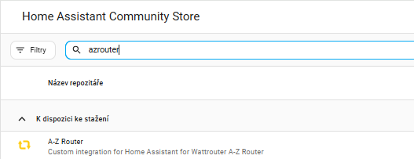
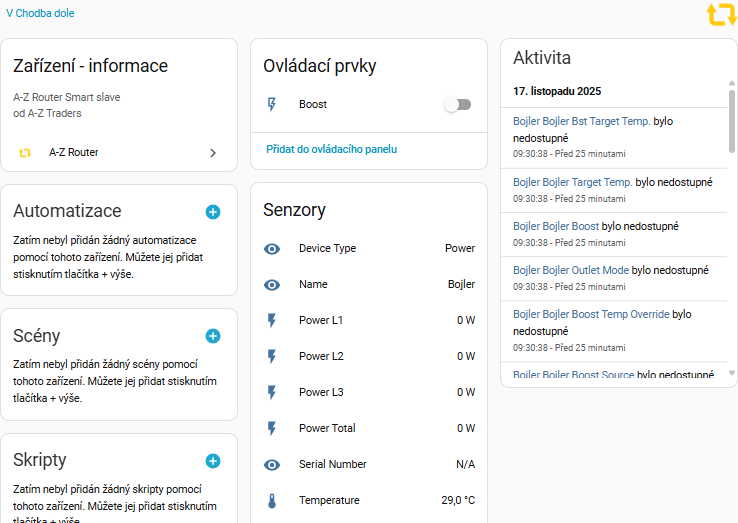
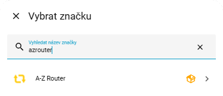
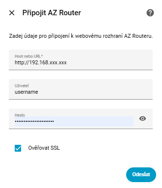
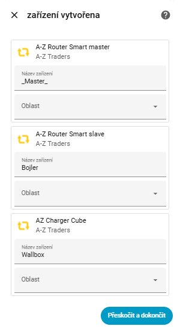
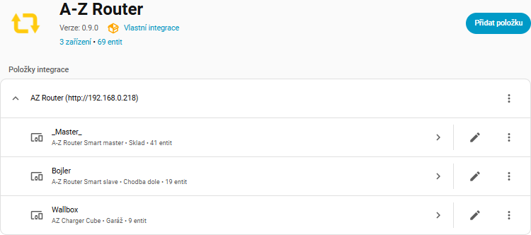
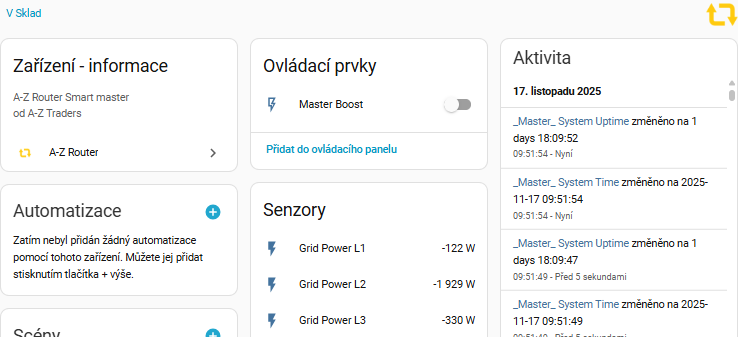

A-Z Router – instalace a základní konfigurace
Stažení z HACS
V HACS vyhledej integraci „A-Z Router“ a nainstaluj ji přímo ze Store. Pokud není dostupná, lze ji přidat ručně přes vlastní repozitář.
 Alternativní instalace
Pokud se integrace neobjeví ve Store, je možné ji přidat ručně přes sekci
Repositáře v HACS – přidáním GitHub repozitáře, ve kterém je integrace
azrouter umístěna.
Přidání integrace v Home Assistantu
Po instalaci integrace z HACS ji je potřeba přidat do Home Assistantu:
- Přejdi do Nastavení → Zařízení a služby.
- Vpravo dole zvol Přidat integraci.
- Vyhledej integraci „A-Z Router“ a potvrď přidání.
Základní konfigurace
Po zvolení integrace se zobrazí dialog základní konfigurace. Vyplň následující údaje:
-
Host or URL – adresa AZ Routeru, např.
http://192.168.xxx.xxx - User – uživatelské jméno z webového rozhraní AZ Routeru
- Password – heslo z webového rozhraní AZ Routeru
Po vyplnění údajů potvrď konfiguraci. Home Assistant se pokusí k AZ Routeru připojit a načíst dostupná zařízení.
Nalezená zařízení
Po úspěšné konfiguraci se zobrazí seznam nalezených zařízení odpovídajících jednotlivým výstupům AZ Routeru. Každému zařízení můžeš přiřadit oblast (místnost), nebo to udělat později v detailu zařízení.
Nová integrace v seznamu
Po dokončení instalace a základního nastavení se integrace A-Z Router zobrazí v seznamu nainstalovaných integrací v sekci Nastavení → Zařízení a služby.
Detail integrace
V detailu integrace uvidíš seznam vytvořených zařízení a jejich stav. Odtud se můžeš prokliknout na jednotlivá zařízení (např. bojler, wallbox, apod.).
Master zařízení
Master zařízení integrace A-Z Router obsahuje obecné senzory, diagnostické informace a přehled celkového stavu AZ Routeru.

Zařízení „Power“ (Bojler)
Zařízení Power (např. bojler) obsahuje všechny ovladače a senzory související s daným výkonovým výstupem – například přepínání režimů, povolení ohřevu, aktuální příkon a další údaje.
Zařízení „Charger“ (Wallbox)
Zařízení Charger (wallbox) obsahuje ovládací prvky nabíjení, senzory výkonu a další parametry týkající se nabíjení elektromobilu.
